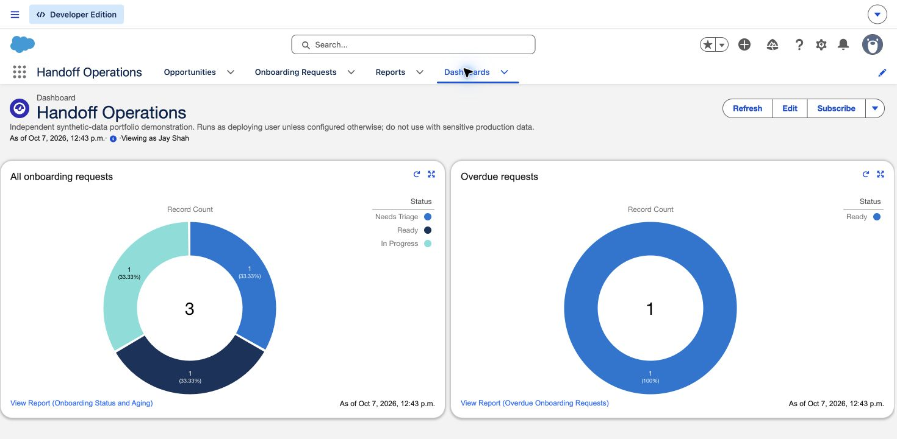

From closed deal
to clear ownership.
Handoff Operations: a Salesforce sales-to-Customer-Success workflow for a simulated B2B software business.
Salesforce Developer EditionLow-code FlowSynthetic dataThe business problem
When a deal closes, an email and spreadsheet handoff can leave onboarding teams without a contact, start date, success criteria or owner. This project defines a consistent handoff and makes exceptions visible.
A traceable operational workflow
What is deployed
| Capability | Evidence included |
|---|---|
| Requirements and process analysis | 12 traceable requirements, stakeholder assumptions, user stories, decision log and two-sprint backlog. |
| Salesforce configuration | Custom object, five Opportunity fields, validation rules, queue, app, permission sets and operational views. |
| Automation and reliability | After-save Flow, snapshot preservation, unique source key and transaction failure behavior. |
| Testing and support | 17 passing Apex test methods, user-mode access checks, rollback test, three simulated support cases and user guide. |
The key design tradeoff
The onboarding request captures the handoff at creation. Later sales edits do not silently overwrite work in progress. This protects operational continuity, but corrections need an explicit coordinator update. Reopening and reclosing a deal preserves its existing request.
How success will be assessed
Deployment, automated business rules and non-admin user-mode access checks passed. Administrator UI checks confirmed requests, queue ownership and dashboard totals. Independent business-user acceptance has not been performed. A future measurement exercise can compare paired synthetic handoff trials using completion time, manual actions, completeness and duplicate counts. There are no invented percentages or financial results.
Live Salesforce evidence

Captured from the deployed practice org. All records are synthetic.